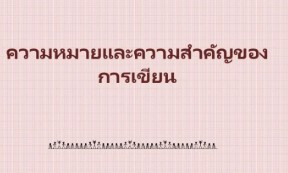

การเขียน
เนื้อหาการเขียน หรือ กระบวนการและองค์ประกอบของการสื่อสารด้วยลายลักษณ์อักษร คือการถ่ายทอดความรู้ ความคิด ความรู้สึก และประสบการณ์ของผู้เขียนออกมาเป็นตัวอักษรหรือสัญลักษณ์ เพื่อให้ผู้อ่านเข้าใจสารได้อย่างถูกต้องและมีประสิทธิภาพสูงสุด ข้อมูลสรุปเกี่ยวกับสาระสำคัญของการเขียนแบ่งออกเป็นหมวดหมู่หลัก ๆ ดังนี้ 1. กระบวนการเขียน (Writing Process)การเขียนที่มีประสิทธิภาพจำเป็นต้องผ่านขั้นตอนอย่างเป็นระบบ ประกอบด้วย ก่อนลงมือเขียน (Prewriting): การเลือกหัวข้อ กำหนดวัตถุประสงค์ รวบรวมข้อมูล และวางโครงเรื่องการร่างงานเขียน (Drafting): การเรียบเรียงความคิดลงสู่กระดาษหรือระบบดิจิทัลโดยเน้นการไหลลื่นของเนื้อหาการปรับปรุงร่าง (Revising): การปรับแต่งข้อความ ปรับโครงสร้างประโยค และตัดต่อเนื้อหาให้สละสลวยการพิสูจน์อักษร (Editing/Proofreading): ตรวจสอบความถูกต้องของตัวสะกด การันต์ วรรณยุกต์ และการเว้นวรรคตอนการเขียนร่างสุดท้าย (Final Draft): จัดทำผลงานฉบับสมบูรณ์พร้อมเผยแพร่